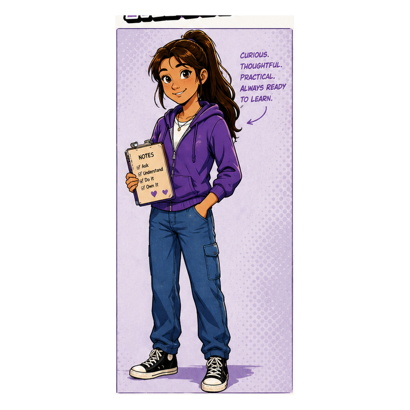
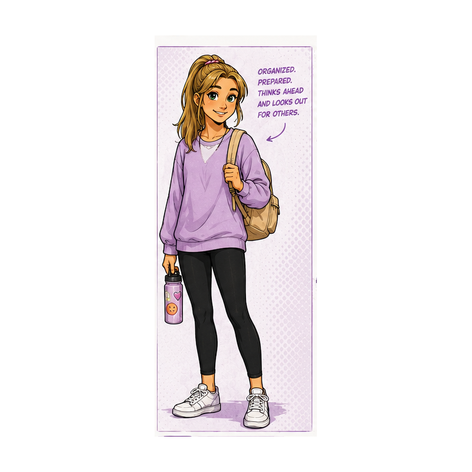

Alex
Learning one episode at a time.
Thoughtful, curious, and willing to admit when he does not know something. Alex becomes more capable as the series continues.
Ordinary people learning practical driving skills together—one episode at a time.
Learning one episode at a time.
Thoughtful, curious, and willing to admit when he does not know something. Alex becomes more capable as the series continues.
Confidence first. Instructions later.
Funny, optimistic, and occasionally certain before checking the facts. Tyler is never intentionally reckless—just confidently early.

Always one step ahead.
Practical, calm, and happiest when the route is set before the car moves. Maya plans without turning everything into a lecture.

The one who notices everything.
Curious and observant. Emma catches warning signs and small details before they become bigger problems.
Alex is learning. Tyler jumps in. Maya plans ahead. Emma notices the details.
There is no perfect driver here, just people getting better together.
Join Them in Episode 1